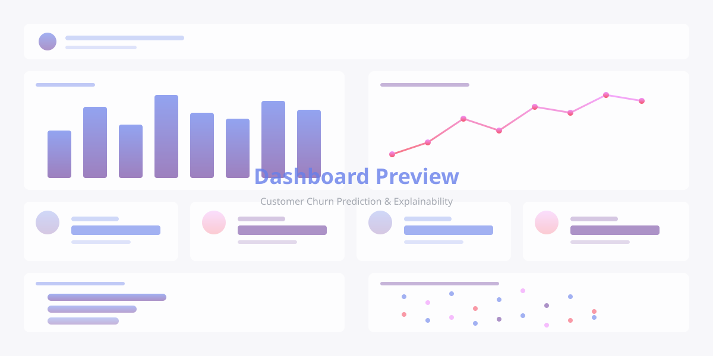

Data Scientist with 4+ years of experience building predictive models and automated analytics solutions. Expert in Python, Machine Learning, and GenAI applications.
I'm a passionate Data Scientist specializing in Machine Learning, Predictive Analytics, and GenAI applications.
With over 4 years of experience at City National Bank and 8+ years mastering Python, I've delivered measurable impact through innovative data solutions. My work has resulted in a 40% reduction in reporting cycles, 35% improvement in forecast accuracy, and 60% reduction in manual effort through intelligent automation.
Currently, I lead the Data Analytics & Reporting team, driving strategic initiatives in statistical modeling, predictive analytics, and experimentation. I'm particularly excited about leveraging cutting-edge GenAI technologies like GPT-4, Claude, and Llama to solve complex business problems.
Years Experience
Years Python
Efficiency Gain
Team Members
Interactive ML application with SHAP explainability
End-to-end churn prediction with interactive dashboard showcasing model performance, feature importance, and real-time customer risk scoring.

Case studies from my work at City National Bank, where I built ML models and GenAI solutions for risk analytics. Code is proprietary, but I've documented the approach and business impact.
Developed proof-of-concepts using GPT-4, Claude, and Llama APIs to automate routine risk narrative generation. Built Python scripts integrating LLM outputs into existing Snowflake data pipelines and Tableau reporting workflows.
Built predictive models using Python (scikit-learn, XGBoost) to forecast transaction volumes and processing times. Developed feature engineering pipelines incorporating historical patterns, seasonality, and business calendar effects.
Designed statistical testing framework using Python to identify high-risk controls requiring additional scrutiny. Applied sampling methodologies and hypothesis testing to optimize testing coverage while maintaining confidence levels.
Additional interactive ML demos and code examples
Exploring cutting-edge ML techniques and GenAI applications
Want to see more of my work?
Visit My GitHub ProfileLong Beach, CA
Minor in Computer Science
I'm always open to discussing new opportunities, collaborations, or data science challenges. Feel free to reach out!
noahgallagher1@gmail.com
562-666-6367
linkedin.com/in/noahgallagher
github.com/noahgallagher1